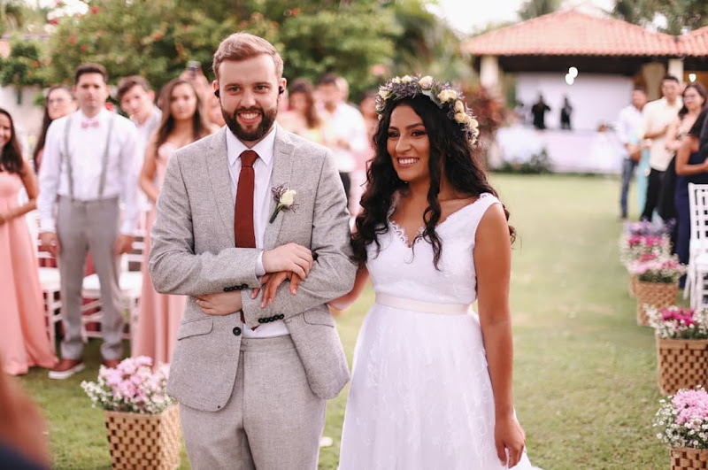
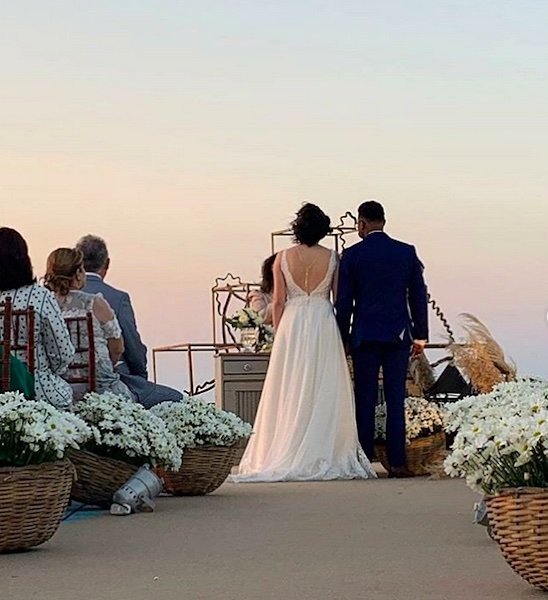

Cerimonial de casamento em Fortaleza com atendimento próximo, direto com quem vai estar lá no seu grande dia.
Pedir orçamento no WhatsApp

Tudo começa numa conversa simples pelo WhatsApp. Daí em diante, o seu casamento ganha forma passo a passo, até o grande dia.
Você conta a data, o lugar e o que imagina para o casamento.
Um encontro para entender o casal, o estilo da festa e o que precisa de cuidado.
Roteiro da cerimônia, horários e contato com os fornecedores, tudo alinhado antes do dia.
O cerimonial conduz cada momento para vocês viverem o dia sem preocupação.
Conte o seu casamento e eu explico como posso ajudar, do planejamento à cerimônia.
Responda 5 perguntas rápidas e mande o resumo pelo WhatsApp, com um cronograma sugerido até o grande dia.
WhatsApp · Atendimento em Fortaleza
Pedir orçamento no WhatsApp